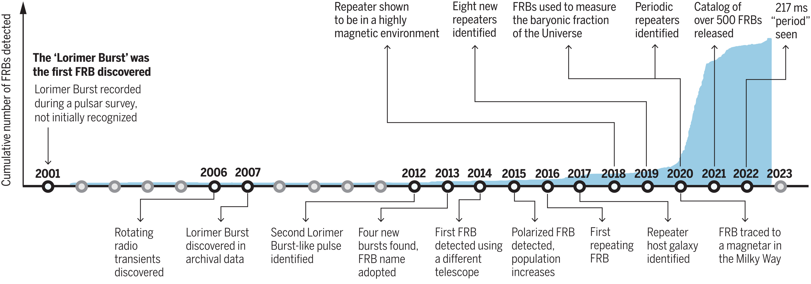

Statistical Study Of Current Fast Radio Bursts (FRB) Transients
SMX7001
1 Introduction
About 40 years since the discovery of pulsars (Hewish et al. 1968), Lorimer et al. (2007) found an intriguing burst in the archival data of pulsar surveys collected by the Parkes Telescope. Pulsars are generally a weak source of radio with flux densities ranging from 0.001 to 5 Jy (Stappers et al. 2011). However, this burst is highly energetic with \(30\pm 10\) Jy flux density and its distance is inferred to be of extra-galactic origin which leads Lorimer et al. (2007) to conclude it as a new phenomenon. The burst is informally known as the ‘Lorimer Burst’.
Subsequent search for Lorimer Burst-like signal later supported Lorimer’s hypothesis especially in Thornton et al. (2013) where 4 more bursts with similar properties are reported. The report prompted more astronomers to discover more Lorimer Burst-like signal whether by combing through archival data or by outright detection in many telescopes around the world. The name ‘fast radio burst’ (FRB) were adopted and the Lorimer Burst is now known as FRB 20010724 following the convention FRB YYYYMMDDX (Petroff, Hessels, and Lorimer 2022) where X is an additional identifier should it be necessary.
FRBs are characterized as a radio pulse with durations in the order of milliseconds and a relatively high frequency dispersion (quantified as ‘dispersion measure’ as will be discussed in sec-prop-dm). Its origin is still unknown but as of the end of 2022, the number of FRB known surpasses 800 detections from ~600 unique sources (Spanakis-Misirlis 2021) as compared to roughly 60 detections in 2019 (Petroff, Hessels, and Lorimer 2019). Therefore, the prospect of research on the origin of FRB seems promising.
For an in-depth review of the growth of FRB research, I would suggest looking into Petroff, Hessels, and Lorimer (2019) and their follow-up review Petroff, Hessels, and Lorimer (2022). In contrast, Bailes (2022) is a brief but a more personal record as a person working closely with Lorimer during and after the discovery. This research focuses on the possibility of subclassification of FRB motivated by the current wealth of data accelerated by the CHIME/FRB Catalog.
This proposal will be structured as follows: #sec-properties lists some of the known properties of a FRB. Some of these properties are taken directly from measurements while some of these properties are inferred from their observational properties and from certain assumptions about the cosmology of the universe. #sec-classification discusses some known types of FRB and some attempts to further subclassify them.

1.1 Catalog
Several catalogs exist for the study of FRBs. The first one is the FRBCAT Petroff et al. (2016/ed) which is no longer maintained past July 20201. The maintainers pointed users to refer to the Transient Naming Server (TNS)2 instead which contains various other transients so it can be a bit hard to navigate. Another catalog that can be used to study FRBs is the FRBSTATS catalog Spanakis-Misirlis (2021) which is open sourced with an easier to use dashboard compared to TNS. One other catalog is the CHIME/FRB Catalog3 released by the Canadian Hydrogen Intensity Mapping Experiment (CHIME) observatory (The CHIME/FRB Collaboration et al. 2021).

The catalog used depends on the use-case of the paper. For example, Bailes (2022) used the FRBSTATS Catalog to show a statistical overview of the growth of FRB detections. Other authors, including Hashimoto et al. (2022), Bo Han Chen et al. (2021), Pleunis et al. (2021) to name a few, used the CHIME/FRB Catalog because it is well-documented and very comprehensive. Limiting one’s study to only the CHIME/FRB telescope is not much of a loss for a statistical study because as we can see in Figure fig-count-by-telescope that among the 818 FRBs recorded by Spanakis-Misirlis (2021), 632 (77.3%) bursts4 are from the CHIME/FRB telescope.
1.2 Problem Statement
This proposal aims to answer questions such as:
- What relationship of its properties can be extracted from the population of known FRBs now that we have more than 800 observed transients?
- Which FRBs exhibit interesting properties compared to the rest of the population?
- What might be the reason behind the interesting properties of the FRBs in question (2)?
1.3 Objective
Now that there is an abundant number of FRB detected, and many more are expected to be detected, this proposal aims to:
- Study the distribution of FRBs to understand the relationship between its properties.
- Study the properties of selected samples of FRB to gain insight on its source or emission mechanism.
- Implement programming methods for the distribution study of FRBs and for the feature study of selected FRBs.
Bailes, Matthew. 2022. “The Discovery and Scientific Potential of Fast Radio Bursts.” Science 378 (6620): eabj3043. https://doi.org/10.1126/science.abj3043.
Bo Han Chen, Tetsuya Hashimoto, Tomotsugu Goto, Seong Jin Kim, Daryl Joe D. Santos, Alvina Y. L. On, Ting-Yi Lu, and Tiger Y. -Y. Hsiao. 2021. “Uncloaking Hidden Repeating Fast Radio Bursts with Unsupervised Machine Learning.” Monthly Notices of the Royal Astronomical Society 509 (1): 1227–36. https://doi.org/10.1093/mnras/stab2994.
Hashimoto, Tetsuya, Tomotsugu Goto, Bo Han Chen, Simon C-C Ho, Tiger Y-Y Hsiao, Yi Hang Valerie Wong, Alvina Y L On, et al. 2022. “Energy Functions of Fast Radio Bursts Derived from the First CHIME/FRB Catalogue.” Monthly Notices of the Royal Astronomical Society 511 (2): 1961–76. https://doi.org/10.1093/mnras/stac065.
Hewish, A., S. J. Bell, J. D. H. Pilkington, P. F. Scott, and R. A. Collins. 1968. “Observation of a Rapidly Pulsating Radio Source.” Nature 217 (5130): 709–13. https://doi.org/10.1038/217709a0.
Lorimer, D. R., M. Bailes, M. A. McLaughlin, D. J. Narkevic, and F. Crawford. 2007. “A Bright Millisecond Radio Burst of Extragalactic Origin.” Science 318 (5851): 777–80. https://doi.org/10.1126/science.1147532.
Petroff, E., E. D. Barr, A. Jameson, E. F. Keane, M. Bailes, M. Kramer, V. Morello, D. Tabbara, and W. van Straten. 2016/ed. “FRBCAT: The Fast Radio Burst Catalogue.” Publications of the Astronomical Society of Australia 33 (2016/ed): e045. https://doi.org/10.1017/pasa.2016.35.
Petroff, E., J. W. T. Hessels, and D. R. Lorimer. 2019. “Fast Radio Bursts.” The Astronomy and Astrophysics Review 27 (1): 4. https://doi.org/10.1007/s00159-019-0116-6.
———. 2022. “Fast Radio Bursts at the Dawn of the 2020s.” The Astronomy and Astrophysics Review 30 (1): 49. https://doi.org/10.1007/s00159-022-00139-w.
Pleunis, Ziggy, Deborah C. Good, Victoria M. Kaspi, Ryan Mckinven, Scott M. Ransom, Paul Scholz, Kevin Bandura, et al. 2021. “Fast Radio Burst Morphology in the First CHIME/FRB Catalog.” The Astrophysical Journal 923 (1): 1. https://doi.org/10.3847/1538-4357/ac33ac.
Spanakis-Misirlis, Apostolos. 2021. “FRBSTATS: A Web-Based Platform for Visualization of Fast Radio Burst Properties.” Astrophysics Source Code Library, June, ascl:2106.028. https://ui.adsabs.harvard.edu/abs/2021ascl.soft06028S.
Stappers, B. W., J. W. T. Hessels, A. Alexov, K. Anderson, T. Coenen, T. Hassall, A. Karastergiou, et al. 2011. “Observing Pulsars and Fast Transients with LOFAR.” Astronomy & Astrophysics 530 (June): A80. https://doi.org/10.1051/0004-6361/201116681.
The CHIME/FRB Collaboration, Mandana Amiri, Bridget C. Andersen, Kevin Bandura, Sabrina Berger, Mohit Bhardwaj, Michelle M. Boyce, et al. 2021. “The First CHIME/FRB Fast Radio Burst Catalog.” The Astrophysical Journal Supplement Series 257 (2): 59. https://doi.org/10.3847/1538-4365/ac33ab.
Thornton, D., B. Stappers, M. Bailes, B. Barsdell, S. Bates, N. D. R. Bhat, M. Burgay, et al. 2013. “A Population of Fast Radio Bursts at Cosmological Distances.” Science 341 (6141): 53–56. https://doi.org/10.1126/science.1236789.